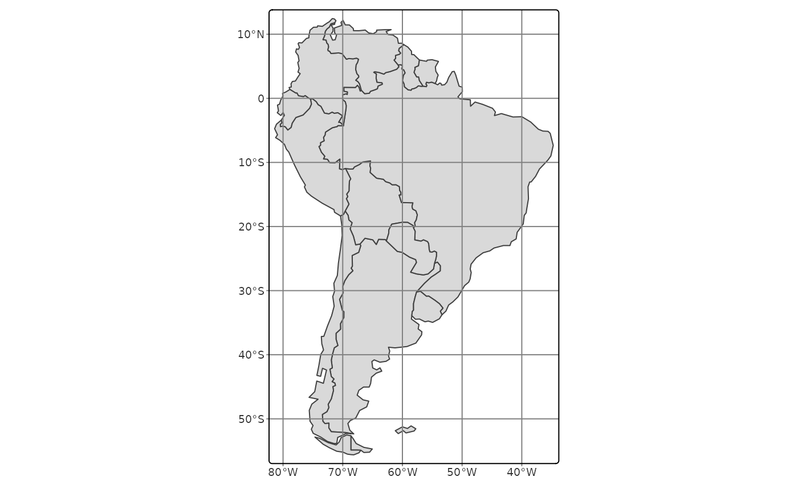
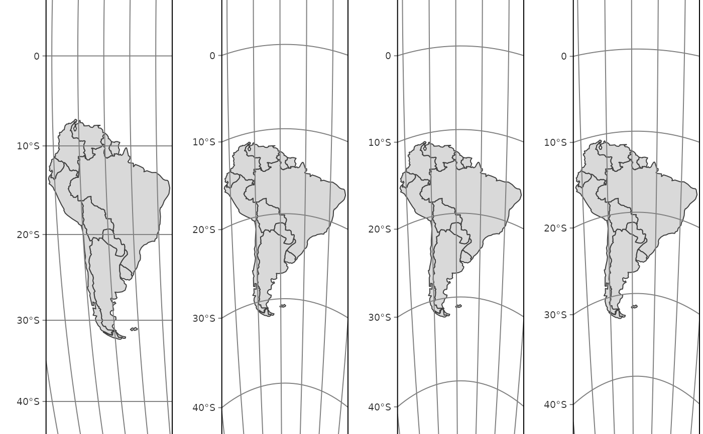

This function sets the map projection. It can also be set via tm_shape(), but tm_crs is generally recommended. It can also be determined automatically (see details); however, this is still work-in-progress.
Arguments
- crs
Map projection (CRS). Can be set to an
crsobject (seesf::st_crs()), a proj4string, an EPSG number, or one the the following generic projections:c("laea", "aeqd", "utm", "pconic", "eqdc", "stere"). See details.- property
Which property should the projection have? One of:
"global","area"(equal-area),"distance"(equidistant),"shape"(conformal). Only applicable ifcrs = "auto". See details.
Details
The automatic crs recommendation is following:
| Property | Recommendation |
global (for world maps) | A pseudocylindrical projection tmap option crs_global, by default "eqearth (Equal Eearth). See https://r-tmap.github.io/tmap/articles/41_advanced_crs.html for more options |
area (equal area) | Lambert Azimuthal Equal Area (laea) |
distance (equidistant) | Azimuthal Equidistant (aeqd) |
shape (conformal) | Stereographic (stere) |
For further info about the available "generic" projects see: for utm: https://proj.org/en/9.4/operations/projections/utm.html for laea: https://proj.org/en/9.4/operations/projections/laea.html for aeqd: https://proj.org/en/9.4/operations/projections/aeqd.html for pconic: https://proj.org/en/9.4/operations/projections/pconic.html for eqdc: https://proj.org/en/9.4/operations/projections/eqdc.html
Note
Plans are to migrate the functionality regarding generic crs and automatic crs recommendation to a separate package.
Examples
SA = World[World$continent == "South America", ]
# latlon coordinates (WGS84)
tm_shape(SA) +
tm_polygons() +
tm_graticules() +
tm_crs(4326)

tm_list = lapply(c("global", "area", "distance", "shape"), FUN = function(property) {
tm_shape(SA) +
tm_polygons() +
tm_graticules() +
tm_crs(property = property) +
tm_title(property)
})
tmap_arrange(tm_list, nrow = 1)
